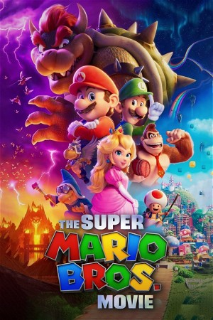

The Super Mario Bros. Movie (2023)
AdventureAnimationComedyFamilyFantasy
| Year | 2023 |
|---|---|
| Rating | US:PG / US:Rated PG |
| Genre | Adventure, Animation, Comedy, Family, Fantasy |
While working underground to fix a water main, Brooklyn plumbers—and brothers—Mario and Luigi are transported down a mysterious pipe and wander into a magical new world. But when the brothers are separated, Mario embarks on an epic quest to find Luigi.